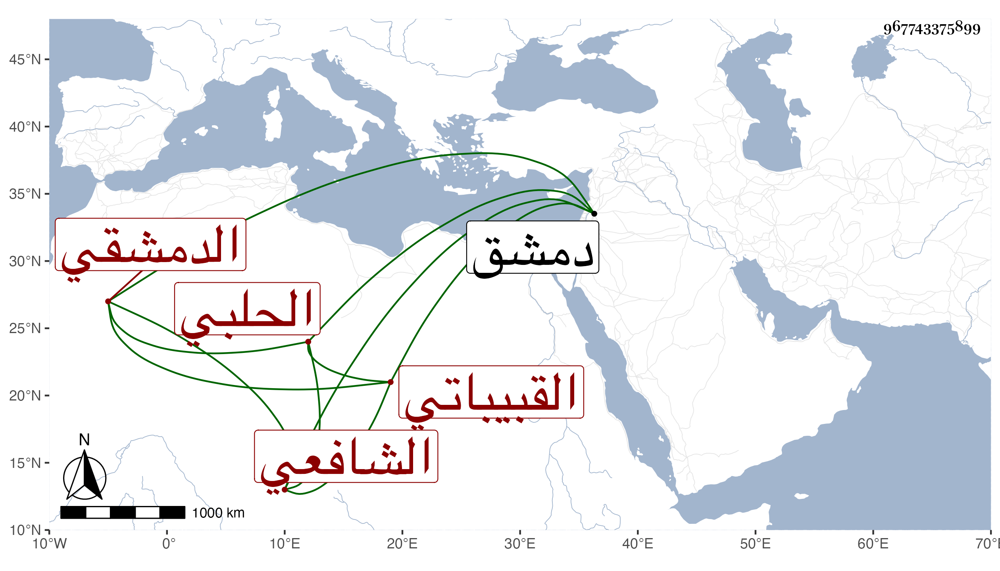

0902Sakhawi.DawLamic.ITO20230111-ara1.EIS1600.967743375899
Biography ID: 967743375899
إبراهيم بن محمد بن محمود بن بدر برهان الدين الحلبي الأصل الدمشقي القبيباتي الشافعي ويعرف بالناجي بالنون والجيم لكونه كان فيما قيل حنبليا ثم تشفع وربما قيل له المحدث . ولد في أحد الربيعين سنة عشر وثمانمائة بدمشق وقال أنه سمع على شيخنا وابن ناصر الدين والفخر عثمان بن الصلف والعلاء بن بردس والشهاب أحمد بن حسن بن عبد الهادي والزين عبد الرحمن بن الشيخ خليل والأريحي ومما سمعه على العلاء الشمائل ومشيخة الأشرف الفخر والسنن لأبي داود والترمذي وعلى الأخير صحيح البخاري وكذا سمع على عبد الله وعبد الرحمن ابني زريق بل قال أنه أجازت له عائشة ابنة عبد الهادي ثم حوقق حتى بين أنها عامة واختص بالعلاء بن زكنون وقرأ عليه القرآن وغيره وتزوج ابنته ثم فارقه وتحول شافعيا غير مرة وقد تكلم على الناس بأماكن بل وخطب مع مزيد تحريه وشدة إنكاره على معتقدي ابن عربي ونحوه كابن حامد محبا في أهل السنة منجمعا عن بني الدنيا قانعا باليسير والثناء عليه مستفيض ووصفه الخضيري بأنه شيخ عالم فاضل محدث محرر متقن معتمد خدم هذا الشأن بلسانه وقلمه وطالع كثيرا من كتبه . قلت ويقالى أنه علق على الترغيب للمنذري شيئا في مجلد لطيف وعمل مولدا في كراريس وغير ذلك وبلغني أنه كثيرا ما يقرأ الفاتحة في جماعته ثم يدعو لي مع كونه لم أعلم اجتماعي به وهو الآن في الإحياء .
